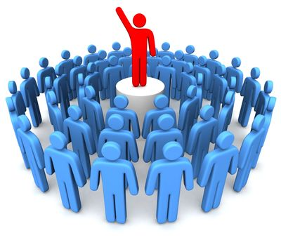

Mentoring
Focused and direct 1-on-1 ongoing mentoring, both guided and responsive, drawing experiences and lessons learned from a long history of corporate and leadership success

The primary impact Water Stone has is working with next generation business leaders. We focus on advancing professionals who are poised to take the reigns as C-Level executives and/or CEO's in the coming years. Candidates for our Coaching & Mentorship program will typically be:
There is a ripple effect possible when investing in leadership development at this level, one that can inspire excellence and spread outward to the larger Kansas City business community.

Focused and direct 1-on-1 ongoing mentoring, both guided and responsive, drawing experiences and lessons learned from a long history of corporate and leadership success
We'll establish a partnership with the Leader in a thought-provoking and creative process that inspires the Leader to maximize their personal and professional potential
We plan to invest 1 to 2 years in each Leader, followed by an optional transition to Alumni status where the Leader will have ongoing access to Water Stone for years to come
We'll conduct an array of individual and team assessments using both proprietary and popular industry tools, then build a customized map of skills and capabilities to develop over time
We'll work with Leaders to create clarity and awareness around their core values, leadership style, goals, team capabilities, strengths, as well as their personal and professional aspirations
coach, verb : to guide others in discovering and achieving their goals
mentor, noun : an experienced and trusted advisor
"A leadership coach is someone who walks with you for a season, steps into your life and provides feedback, a different perspective, and when appropriate, a nudge to move you forward." - Alan Nelson, Coach